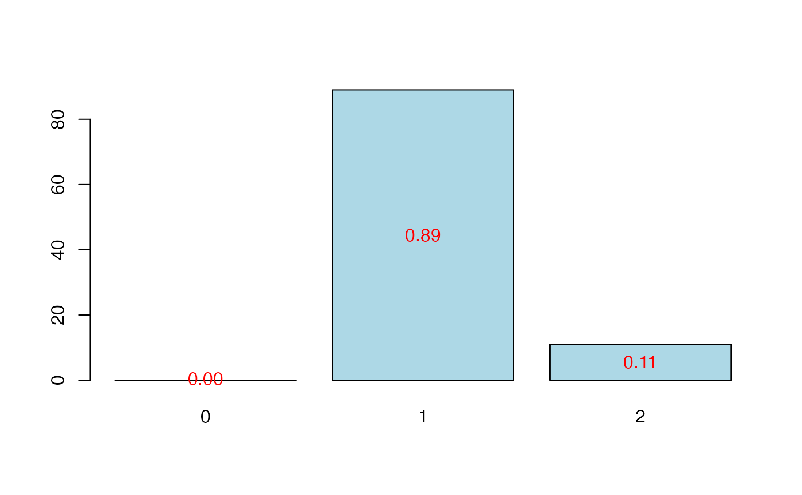

R/plot.table.summary.cv.plsRmodel.R
plot.table.summary.cv.plsRmodel.RdThis function provides a table method for the class
"summary.cv.plsRmodel"
# S3 method for table.summary.cv.plsRmodel plot(x, type = c("CVMC", "CVQ2", "CVPress"), ...)
| x | an object of the class |
|---|---|
| type | the type of cross validation criterion to plot. |
| ... | further arguments to be passed to or from methods. |
NULL
Nicolas Meyer, Myriam Maumy-Bertrand et Frédéric Bertrand (2010). Comparing the linear and the logistic PLS regression with qualitative predictors: application to allelotyping data. Journal de la Societe Francaise de Statistique, 151(2), pages 1-18. http://publications-sfds.math.cnrs.fr/index.php/J-SFdS/article/view/47
Frédéric Bertrand
frederic.bertrand@utt.fr
https://fbertran.github.io/homepage/
data(Cornell) bbb <- cv.plsR(Y~.,data=Cornell,nt=6,K=6,NK=5, verbose=FALSE) plot(cvtable(summary(bbb)),type="CVQ2")#> ____************************************************____ #> ____Component____ 1 ____ #> ____Component____ 2 ____ #> ____Component____ 3 ____ #> ____Component____ 4 ____ #> ____Component____ 5 ____ #> ____Component____ 6 ____ #> ____Predicting X without NA neither in X nor in Y____ #> ****________________________________________________**** #> #> #> NK: 1, 2, 3, 4, 5 #> #> CV Q2 criterion: #> 0 1 #> 0 5 #> #> CV Press criterion: #> 1 2 3 4 #> 0 0 4 1rm(list=c("bbb")) # \donttest{ data(Cornell) plot(cvtable(summary(cv.plsR(Y~.,data=Cornell,nt=6,K=6,NK=100, verbose=FALSE))),type="CVQ2")#> ____************************************************____ #> ____Component____ 1 ____ #> ____Component____ 2 ____ #> ____Component____ 3 ____ #> ____Component____ 4 ____ #> ____Component____ 5 ____ #> ____Component____ 6 ____ #> ____Predicting X without NA neither in X nor in Y____ #> ****________________________________________________**** #> #> #> NK: 1, 2, 3, 4, 5, 6, 7, 8, 9, 10 #> NK: 11, 12, 13, 14, 15, 16, 17, 18, 19, 20 #> NK: 21, 22, 23, 24, 25, 26, 27, 28, 29, 30 #> NK: 31, 32, 33, 34, 35, 36, 37, 38, 39, 40 #> NK: 41, 42, 43, 44, 45, 46, 47, 48, 49, 50 #> NK: 51, 52, 53, 54, 55, 56, 57, 58, 59, 60 #> NK: 61, 62, 63, 64, 65, 66, 67, 68, 69, 70 #> NK: 71, 72, 73, 74, 75, 76, 77, 78, 79, 80 #> NK: 81, 82, 83, 84, 85, 86, 87, 88, 89, 90 #> NK: 91, 92, 93, 94, 95, 96, 97, 98, 99, 100 #> #> CV Q2 criterion: #> 0 1 2 #> 0 89 11 #> #> CV Press criterion: #> 1 2 3 4 5 #> 0 0 33 55 12# }